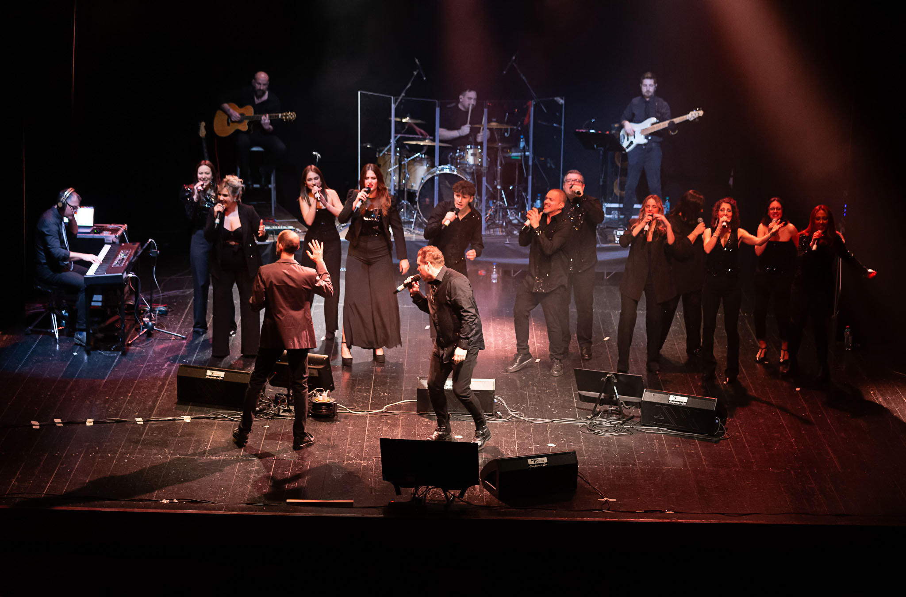

Dal 2004 uniamo l'energia della musica dal vivo alla spiritualità del gospel: voci, prove e concerti che raccontano vent'anni di storia — fino al primo posto al European Gospel Festival 2023.
Il For Joy Contemporary Gospel Choir è un coro dinamico e coinvolgente, fondato nel 2004, che unisce la freschezza della musica dal vivo all'emozione della spiritualità gospel. Cantanti e musicisti da percorsi diversi, un solo obiettivo: portare gioia, speranza e unità su ogni palco.
Scopri la nostra storia